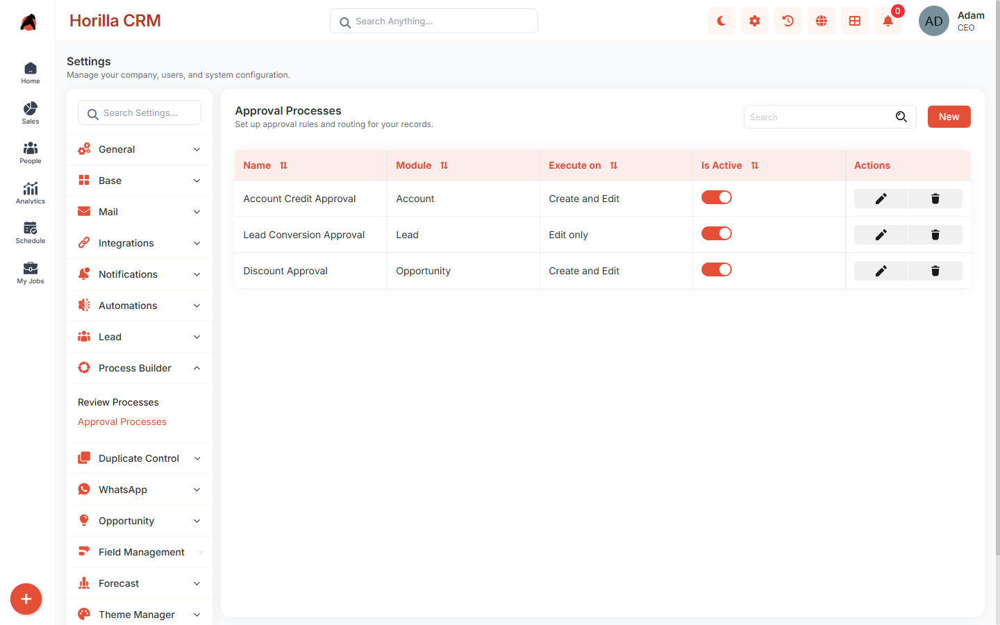
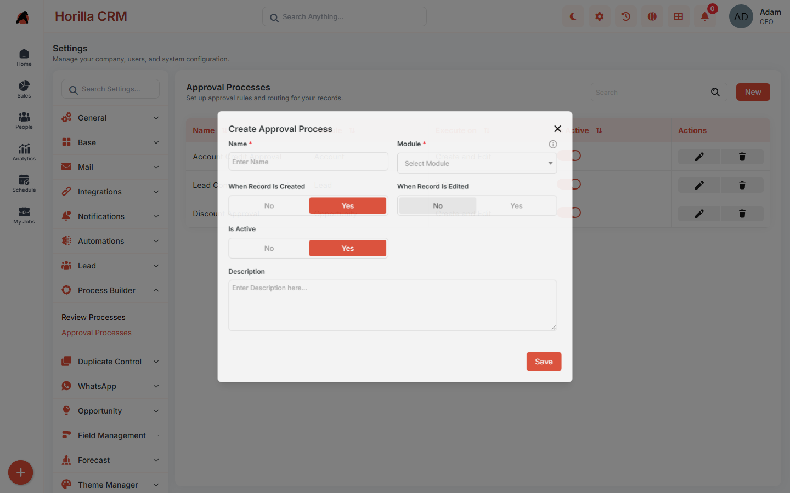
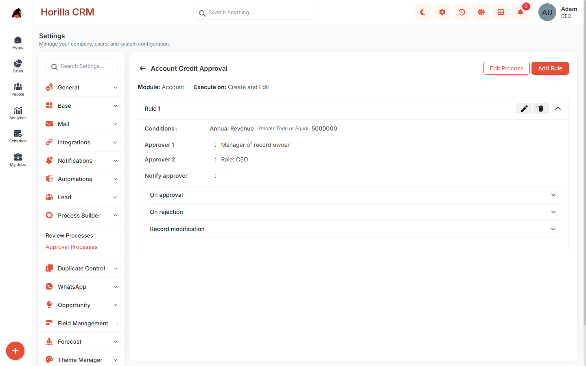

Introduction
The Approval Process module lets administrators define automated workflows that run when CRM records are created or edited. Nominated approvers review the record before it moves forward. A workflow can chain several levels of approvers, restrict itself with conditions, and perform automatic actions depending on whether the record is approved or rejected.
Working a request that is already waiting — the jobs list, the history and the response — is covered in Approval Jobs.
Key Features and Functionalities
1. Approval Process Overview
Purpose: see and manage every approval process configured in the system.
- Go to Settings → Process Builder → Approval Processes.
- The page description is
Set up approval rules and routing for your records.
- The list shows Name, Module, Execute on, Is Active and Actions. Execute on is Create and Edit, Create only or Edit only. Is Active is a switch. Actions are edit and delete.
- A search function is available to locate a process in the list.
- When no approval process has been created yet, the page displays an empty-state message.

2. Creating a New Approval Process
Purpose: define a new workflow and the records it applies to.
- Click New on the Approval Processes page.
- Complete the form fields described below.
- Click Save.
| Field | Description |
|---|---|
| Name | A descriptive label for the approval process. |
| Module | The record type the process applies to: Lead, Opportunity, Account or Contact. |
| When a record is created | Trigger that fires when a new record of the selected module is created. |
| When a record is edited | Trigger that fires when an existing record is updated. |
| Is Active | Turns the process on or off without deleting it. |
Both triggers can be enabled at the same time, so a single process can run on creation and on edit.

3. Process Detail View
Purpose: open a process to manage its rules.
- Click a process name in the list to open its detail view.
- The top navbar carries the Add Rule and Edit Process buttons.
- If the process has no rules yet, the page displays an empty-state message.

4. Adding Process Rules
Purpose: decide which records a process catches, who approves them, and what happens afterwards.
Rules are evaluated in order and the first rule that matches is the one applied.
Conditions
- Conditions are optional.
- Each condition row is built from a Field, an Operator and a Value.
- Condition rows are combined with AND or OR.
- Use + Add More to add further condition rows.
- With no conditions set, the rule applies to every record that fires the trigger.
Approvers
- Each approver entry is given an Order, which sets its position in the approval chain.
- Approver Type can be User, Role or Owner's Manager.
Approval Method
- Sequential – approvers are asked one at a time, in the configured order.
- Parallel – all approvers are notified at once. Choose whether Anyone may approve or Everyone must approve.
Approval Actions
Actions performed automatically when the record is approved: Update Field, Assign Task, Send Mail or Send Notification.
Rejection Actions
The same set of action types is available for rejections and is configured separately from the approval actions.
Effect on Record Visibility
- Records that are pending approval or that have been rejected are hidden from the standard list views.
- They remain visible in the approvers' queue.
- Once fully approved, the record reappears in the list views and becomes editable again.
Best Practices
- Give each process a descriptive name.
- Use conditions to limit which records trigger the process.
- Configure both approval and rejection actions.
- Test a new process on a staging environment before enabling it in production.
- Use Is Active to pause a process rather than deleting it.
- Review the approval history to find bottlenecks in the chain.